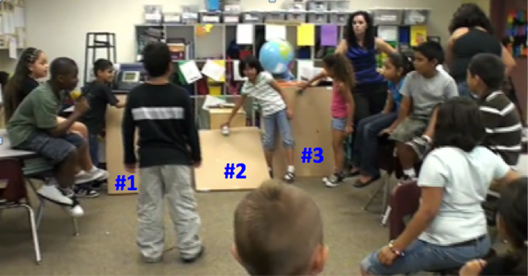

On Day 7 the class performed an experiment with cars going down three ramps of different steepness. Cars that went down the two steepest ramps crashed at the bottom and rolled off to the side. Only the car that went down the shallowest ramp made it to the bottom and rolled along the rug some distance before coming to a stop. There was disagreement in the class about which car went the fastest, and so Sharon decided to start the next day with a whole class discussion about that.

On Day 8 Sharon had a discussion with the class about how they would know which car had gone the fastest. Fabian suggests that the first car that does down is the fastest. However, another group had said that the car down ramp 2 was the fastest because it went farther. Fabian says it doesn't matter if it goes the farthest because the one that gets to the bottom first might crash and then it wouldn't go the farthest. Tracy or Jewel said she heard him but she didn't understand him. Kirven says that if the ramp is very steep the car will get to the bottom first (it'll be the fastest), but it will crash because the ramp is too tall. He says that ramp 1 would be the fastest. Someone else yells that ramp 3 then would be the fastest (it's actually steeper). Alex comments about ramp 3, saying that it would be the fastest, but the car would crash and tumble even more than with ramp 1.
After some discussion the class seems to want to think about a person going down the ramps. They agree, with some help from Sharon, that going down ramps 1 and 3 would be faster, but the ramps are dangerous (if you would try sliding down them), but that ramp 3 is not dangerous, and not as fast. Daisy then says that with ramps 1 and 2 it goes faster (and crashed), but with ramp 2 it goes further. The cars on ramps 1 and 3 didn't go farther because they crashed at the bottom of the ramps and stopped. Sharon wants to know if students agree with this. Some students said they didn't get it, so Sharon asks someone to explain. Bianca says, "she's trying to say that number1 and 3 go the fastest down (the ramps), but they crash because the hill is kind of steep, and then they stop. And then she's trying to say … that number 2 can go the farthest, but it doesn't go that fast." Timmy says he sort of gets it.
Sharon then asks Timmy to say what Bianca just said in his own words. Timmy says, "she said that number 2 is faster …" Fabian says, 'no' (that's not what she said), she said that numbers 1 and 3 are fastest. Tracy then says that if you put the top of ramp 2 a little higher, the car would then be faster without crashing. (This suggests she thinks the higher the ramp, the faster the car will go.)